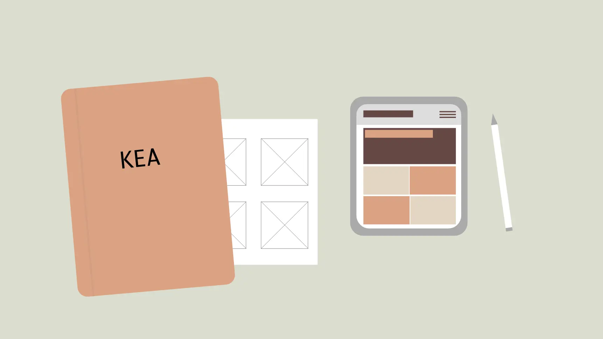

Tema 6 - Portfoilio
Portfolio Website
I dette tema var opgaven at lave et portfolio website indeholdende de temaer som vi har været igennem på 1. semester. Jeg har brugt min tillærte viden, færdigheder og kompetancer til at udvikle websitet. Jeg har været igennem en designproces, hvor jeg har skitseret og udviklet moodboard, style tile og wireframes. Jeg har til kodningen anvendt de redskaber jeg har lært, heribland udviklet et sitemap og anvendt Firefox Inspector til at problemløse.

Kompetencer
- CSS properties.
- Webdesign konventioner.
- Grafik i XD og Illustrator.
- Firefox Inspector.
- Brugertests.
- Designproces - skitseringsmetoder.